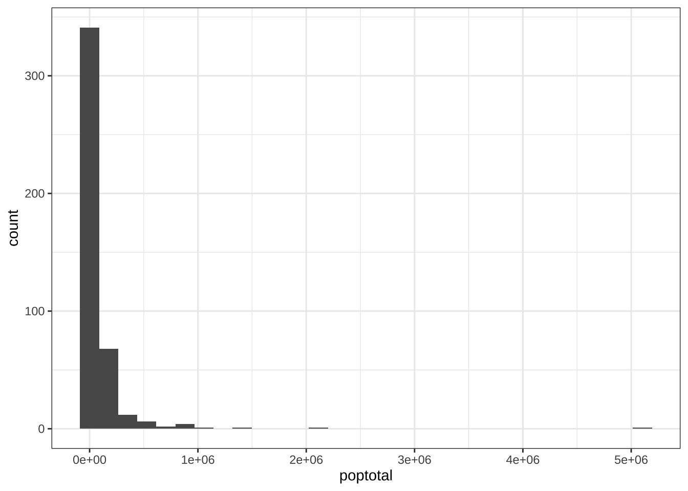
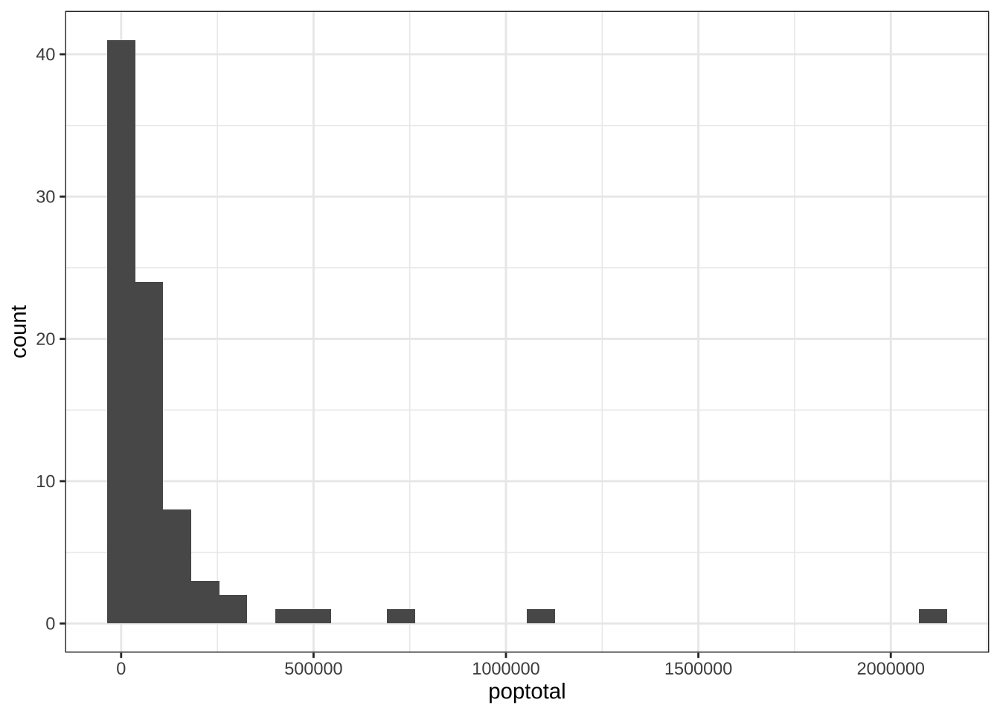
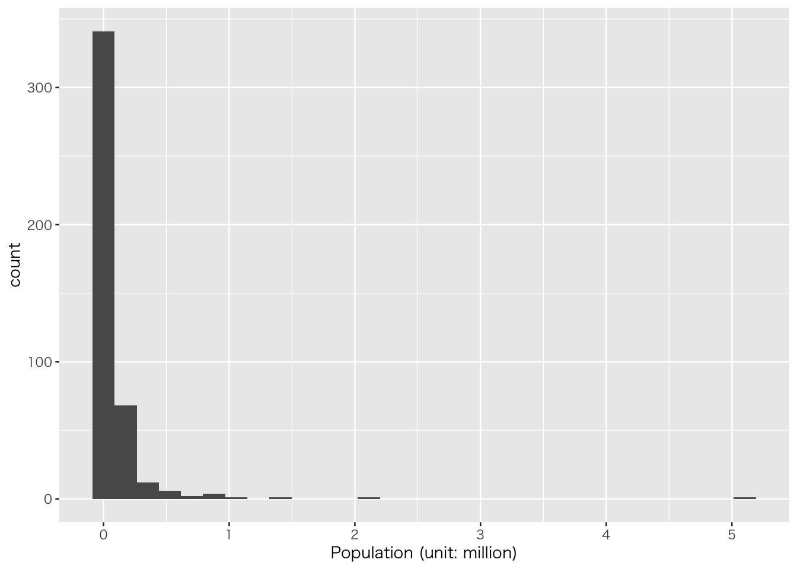

chapter: 9 dplyrによるデータ集計
9.1 はじめに
データ分析にかかる時間の大半は、分析目的に合わせてデータをキレイに整える段階に費やされます。Rのdplyrというpackageを用いて、少しでも楽にデータ集計を進めるためのコツを学びます。
一定の時間が経過した後に見直しをすると、クリック操作で行った手続きを思い出すことは不可能です。できるだけRの環境の中でデータの整理を行うことでデータ整理自体の時間節約になるだけでなく、dplyrコマンドとして作業を記録しておくことで、過去の自分が何をしたかを思い出す時間も節約することができます。
#install.packages("dplyr")
library(dplyr)
library(ggplot2)
head(midwest)## # A tibble: 6 x 28
## PID county state area poptotal popdensity popwhite popblack
## <int> <chr> <chr> <dbl> <int> <dbl> <int> <int>
## 1 561 ADAMS IL 0.052 66090 1271. 63917 1702
## 2 562 ALEXA… IL 0.014 10626 759 7054 3496
## 3 563 BOND IL 0.022 14991 681. 14477 429
## 4 564 BOONE IL 0.017 30806 1812. 29344 127
## 5 565 BROWN IL 0.018 5836 324. 5264 547
## 6 566 BUREAU IL 0.05 35688 714. 35157 50
## # … with 20 more variables: popamerindian <int>, popasian <int>,
## # popother <int>, percwhite <dbl>, percblack <dbl>,
## # percamerindan <dbl>, percasian <dbl>, percother <dbl>,
## # popadults <int>, perchsd <dbl>, percollege <dbl>, percprof <dbl>,
## # poppovertyknown <int>, percpovertyknown <dbl>,
## # percbelowpoverty <dbl>, percchildbelowpovert <dbl>,
## # percadultpoverty <dbl>, percelderlypoverty <dbl>, inmetro <int>,
## # category <chr>9.2 パイプ演算子について
パイプ演算子とは%>%のことで、dplyrを読み込むことで使用できます。パイプ演算子は、パイプの左側のオブジェクトを右側に「流す」ことができます。最初は直感的にわかりにくいかもしれませんが、これによって、以下のようなメリットが生まれます。
- 集計の途中で無駄なデータフレームを作る必要がない。
- コードが簡素化され、見やすくなる。
- 改行が入るので、コメントを残しやすい。
一方、デメリットとしては、たまにパイプ演算子を使うとうまく機能させられない関数がありますが、入門の段階ではそのような現象はほとんどなく、導入のメリットしかないと思いますので、積極的に活用ですべきと考えます。
# パイプ演算子を用いた場合
midwest %>%
ggplot()+geom_histogram(aes(poptotal))## `stat_bin()` using `bins = 30`. Pick better value with `binwidth`.
# パイプ演算子を用いない場合
ggplot(midwest)+geom_histogram(data=midwest,aes(poptotal))## `stat_bin()` using `bins = 30`. Pick better value with `binwidth`.
# パイプ演算子で他の演算も行う
midwest %>%
filter(state=="MI") %>% # 対象をミシガン州だけに
ggplot()+geom_histogram(aes(poptotal))## `stat_bin()` using `bins = 30`. Pick better value with `binwidth`.
# パイプ演算子を用いないで、他の演算も行う
midwestMI<-filter(midwest, state=="MI")
ggplot(midwestMI)+geom_histogram(aes(poptotal)) ## `stat_bin()` using `bins = 30`. Pick better value with `binwidth`.
最後の例では結果として２行になり、midwestMIというデータフレームも作成された。
9.3 エクセル作業を代替してみる
エクセルでクリックで行う作業をコードで残そう。
# 列の追加
midwest %>%
mutate(poptotal2=poptotal/1000000) %>%
ggplot()+geom_histogram(aes(poptotal2))+
xlab("Population (unit: million)")## `stat_bin()` using `bins = 30`. Pick better value with `binwidth`.
# 列の削除
midwest %>%
select(state, area, poptotal,popdensity) -> midwestSmall
head(midwestSmall)## # A tibble: 6 x 4
## state area poptotal popdensity
## <chr> <dbl> <int> <dbl>
## 1 IL 0.052 66090 1271.
## 2 IL 0.014 10626 759
## 3 IL 0.022 14991 681.
## 4 IL 0.017 30806 1812.
## 5 IL 0.018 5836 324.
## 6 IL 0.05 35688 714.9.4 データベースとしての利用
# left_join()関数
# summarize()関数
# group_by()関数